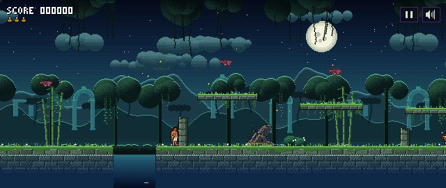
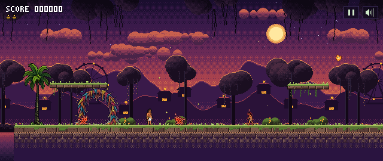
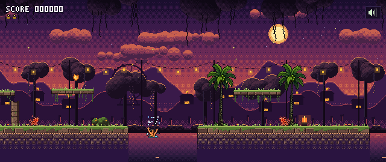
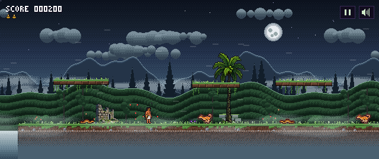
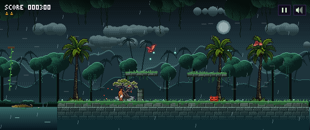
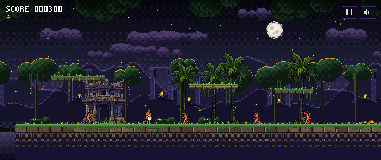

A coconut tapper falls into a sacred grove. Five corrupted guardians. Three buttons: run, jump, throw.
The World
At the edge of Kerala's backwaters sits the village of Muruthikudi. Beyond it lies Kanjiravanam, the sacred grove. Children are told never to go there after dark.
Kannan, a coconut tapper, falls deeper into the grove than anyone has gone. The grove's guardian, Kanjiravanam Amma, tells him what is wrong: five sacred trees hold an ancient seal, and the Kazhukan corruption, with its red eyes and rim, is twisting the guardians of each one.
Run through each grove, free its guardian, and bring the trees back to bloom. The journey takes him from a riverside village to a festival gone silent, and all the way down to Pathalam, to meet King Maveli.
Act I, the bamboo hollow. One look from her turns your controls around.
Act II, the abandoned festival. He loves a party. Hit the real one, not the clones.
Act III, the foggy pepper hills. A shape-shifter who can only be hurt in the moment he changes.
Act IV, the monsoon mangroves. Hit the eye while it is open, and never stand still under her gaze.
Act V, the banyan temple grove. An armoured giant. Wait for the moment right after his stomp.
In the game






Gameplay
Old-school simplicity. Kerala folklore. Made for two thumbs on a phone.
Move, jump, throw a coconut. Hold to keep throwing. That is the whole game, easy to pick up and hard to put down.
A riverside village, a bamboo hollow, an abandoned festival, foggy pepper hills, monsoon mangroves and a banyan temple grove.
Yakshi, Kuttichathan, Odiyan and more. Each guardian has one trick to learn, and you can learn it in one try.
Walk past a chayakada and it saves your place and refills your coconuts. No buttons, no menus.
A bike ride through the festival road, a fever-dream disco, and a rope-swinging journey down to Pathalam.
Hand-drawn pixel art with its own palette for every act, and a game that plays fully offline.